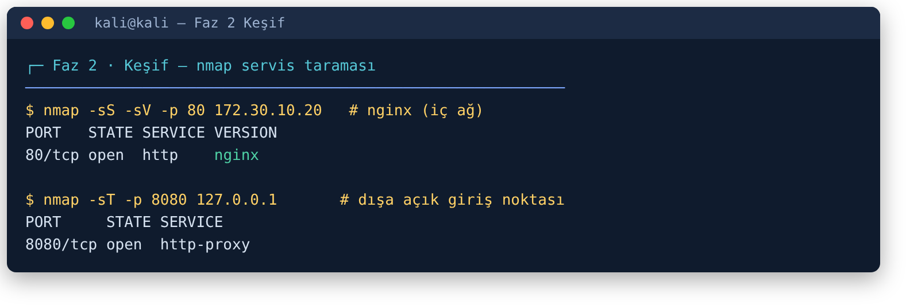
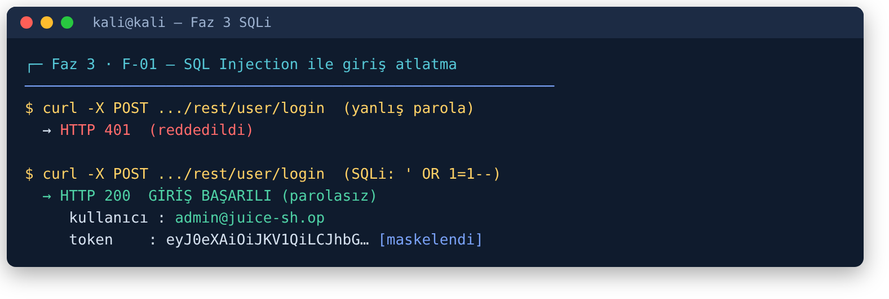
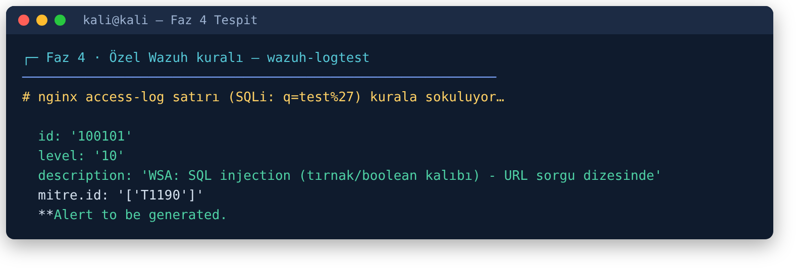
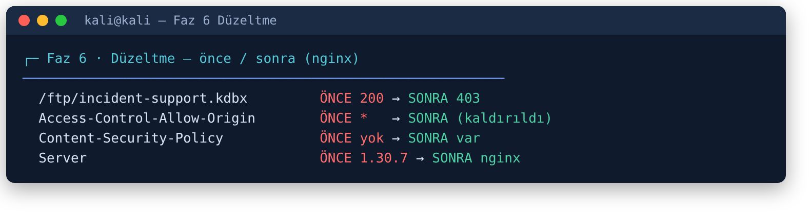

http://127.0.0.1:8080 üzerinde çalışırken.Bu proje, tek bir Kali Linux sanal makinesi içinde Docker Compose ile kurulan izole bir laboratuvarda, bir web uygulamasına (OWASP Juice Shop) karşı uçtan uca bir güvenlik değerlendirmesi yürütür. Çalışma yalnızca saldırıyı değil, saldırı → tespit → trafik analizi → düzeltme → yeniden test döngüsünün tamamını kapsar; böylece hem saldırgan (kırmızı takım) hem savunmacı (mavi takım) bakış açısını birleştirir.
Uygulama bir nginx ters vekil (reverse proxy) arkasında çalışır, trafiği bir Wazuh SIEM örneği izler. Değerlendirme sonucunda 7 zafiyet elle doğrulandı. En kritik olanı, parola bilinmeden yönetici hesabına giriş sağlayan bir SQL enjeksiyonudur.
| Önem | Adet | Bulgular |
|---|---|---|
| KRİTİK | 1 | F-01 SQLi ile kimlik doğrulama atlatma |
| YÜKSEK | 2 | F-02 Aramada SQLi · F-04 Hassas dosya ifşası (KeePass) |
| ORTA | 3 | F-03 Yetkisiz veri ifşası · F-05 Açık yönlendirme · F-07 Eksik güvenlik başlıkları |
| DÜŞÜK | 1 | F-06 Gevşek CORS |
nginx katmanında temiz biçimde düzeltilebilen 4 bulgu + sürüm ifşası düzeltildi ve yeniden test edildi; kök nedeni uygulama kodunda olan SQL enjeksiyonu ve yetkisiz erişim için kod düzeyinde düzeltme önerileri sunuldu. Ayrıca, saldırıların bir kısmının standart SIEM kurallarınca görülmediği tespit edilerek 3 özel Wazuh kuralı yazıldı ve doğrulandı.
| Kapsam içi | Kapsam dışı |
|---|---|
|
OWASP Juice Shop (hedef) nginx ters vekil İzole Docker ağları: 172.30.10.0/24, 172.30.20.0/24 Giriş noktası: http://127.0.0.1:8080 |
İnternetteki her IP / alan adı / servis LAN, yönlendirici, VM host makinesi Wazuh bileşenleri (yalnızca gözlemci) DoS / yük testi / kaynak tüketme |
Saldırı kaynağı yalnızca aynı Kali VM'dir. Hedef portlar yalnızca 127.0.0.1'e bağlanmış, iç uygulama
ağı internete çıkışsız (internal: true) yapılandırılmıştır; böylece lab dışına hiçbir trafik gitmez.
Her tarama öncesinde hedeflerin lab ağına ait olduğu docker network inspect ile doğrulanmıştır.
Değerlendirme yedi fazda yürütüldü:
| Faz | İçerik | Başlıca araçlar |
|---|---|---|
| 0–1 | Planlama ve izole lab kurulumu | Docker Compose, nginx, Wazuh |
| 2 | Keşif (host/port/servis, içerik keşfi) | nmap, ffuf, curl |
| 3 | Zafiyet analizi (7 bulgu, elle doğrulama) | OWASP ZAP, Burp, elle test |
| 4 | Tespit mühendisliği (özel kurallar) | Wazuh (özel kurallar) |
| 5 | Ağ trafiği analizi | tshark / Wireshark |
| 6 | Düzeltme ve yeniden test | nginx sertleştirme |
| 7 | Raporlama | — |
Mimari: Kali (saldırgan: nmap, ZAP, Wireshark) → 127.0.0.1:8080 → nginx ters vekil →
Juice Shop (izole ağ). nginx erişim/hata logları Wazuh yöneticisine beslenir; Wazuh indexer ve panosu olayları
toplar. Tüm bileşenler tek VM'de, yalnızca loopback'e bağlı.
http://127.0.0.1:8080 üzerinde çalışırken.
| ID | Başlık | Önem | OWASP 2021 | Wazuh tespiti | Düzeltme |
|---|---|---|---|---|---|
| F-01 | SQLi ile kimlik doğrulama atlatma | KRİTİK | A03 | ✗ (gövde) | kod önerisi |
| F-02 | Ürün aramada SQLi + hata ifşası | YÜKSEK | A03 | ⚠ kısmi | kod önerisi |
| F-04 | Hassas dosya ifşası (/ftp, KeePass) | YÜKSEK | A01/A05 | ⚠ kısmi | nginx ✓ |
| F-03 | Yetkisiz veri ifşası (/api/Feedbacks) | ORTA | A01 | ✗ | kod önerisi |
| F-05 | Açık yönlendirme (izin listesi atlatma) | ORTA | A01 | ✗ | nginx ✓ |
| F-07 | Eksik güvenlik başlıkları (CSP…) | ORTA | A05 | ✗ | nginx ✓ |
| F-06 | Gevşek CORS (ACAO: *) | DÜŞÜK | A05 | ✗ | nginx ✓ |
POST /rest/user/loginGiriş uç noktası, email alanını doğrudan bir SQL sorgusuna yerleştirir. ' OR 1=1--
yükü sorgu mantığını her zaman doğru yaparak parola bilinmeden ilk kullanıcıyla (yönetici)
oturum açar. Negatif test (yanlış parola) 401 verirken, yük geçerli bir JWT ve admin@juice-sh.op
döndürdü. Etki: tüm hesaplara tam erişim. Düzeltme: parametreli sorgu / ORM parametre bağlama.

' OR 1=1-- yükü parolasız admin girişi sağlıyor.GET /rest/products/search?q=Arama parametresi bir LIKE '%...%' cümlesine doğrudan girer. Tek tırnak eklendiğinde sunucu
tam hata mesajını döndürür: SQLITE_ERROR: near "'%'": syntax error. Bu hem enjeksiyonu kanıtlar
hem de veritabanı türünü/sorgu yapısını sızdırır. Sorumlu test gereği tüm kullanıcı tablosu çekilmedi.
Düzeltme: parametreli sorgu; üretimde ayrıntılı hataları kapat.
GET /ftp//ftp dizini listelenebiliyor; içinde bir KeePass parola veritabanı
(incident-support.kdbx) ve yedek dosyalar kimlik doğrulamasız indirilebiliyor. Sunucu bazı
uzantıları (.bak, .pyc) engelliyor ama .kdbx'i engellemiyor — kara
liste yaklaşımının zayıflığı. Dosyalar diske kaydedilmedi, KeePass açılmaya çalışılmadı. Düzeltme:
dizin erişimini kaldır (uygulandı: nginx 403).
GET /api/FeedbacksUç nokta, kimlik doğrulaması olmadan tüm müşterilerin geri bildirimlerini (farklı UserId'ler,
kısmen maskeli e-postalar) döndürüyor. /api/Users, /api/Cards gibi uç noktalar doğru
biçimde 401 verirken bu uç nokta korumasız — erişim kontrolünün tutarsız uygulanması. Düzeltme: uç
noktaya erişim kontrolü; yanıttan kimlik alanlarını çıkar.
GET /redirect?to=Yönlendirme hedefi "içinde geçiyor mu" (substring) mantığıyla denetleniyor. İzinli bir URL'yi parametre
olarak içeren dış adrese yönlendirme mümkün: ?to=https://example.com/x?p=https://github.com/juice-shop/juice-shop
→ saldırgan adresine 302. Kimlik avı için kötüye kullanılabilir. Düzeltme: tam-eşleşen izin listesi
(kod); nginx'te atlatma imzası engellendi.
Content-Security-Policy, Referrer-Policy ve Permissions-Policy başlıkları yoktu (X-Frame-Options ve X-Content-Type-Options mevcuttu). CSP eksikliği, olası bir XSS'in etkisini büyütür. Düzeltme: nginx'te CSP + Referrer-Policy + Permissions-Policy eklendi; uygulamanın meşru kaynaklarına göre ayarlandı.
Access-Control-Allow-Origin: * her yanıtta mevcut. Ancak Allow-Credentials ayarlı
olmadığından kimlik bilgili saldırı mümkün değil — bu yüzden önem düşük. (Bulgu, olduğundan
büyük gösterilmedi.) Düzeltme: nginx'te başlık kaldırıldı (uygulama aynı kaynaktan sunulduğu için
CORS'a ihtiyacı yok).
Değerlendirmenin en öğretici sonuçlarından biri: saldırıların çoğu standart Wazuh kurallarınca görülmedi.
İki neden: (1) hazır SQLi kuralı select/union gibi anahtar kelime arıyor, bizim tırnak/boolean
tabanlı yüklerimizde bunlar yoktu; (2) uygulamaya özel saldırıların (/ftp/*.kdbx, /redirect)
hazır karşılığı yoktu. Bu boşlukları kapatmak için 3 özel kural yazıldı:
| Kural | Seviye | Yakaladığı | Bulgu |
|---|---|---|---|
| 100101 | 10 | URL'de tırnak/boolean SQLi | F-02 |
| 100110 | 10 | /ftp hassas uzantı erişimi | F-04 |
| 100120 | 8 | Açık yönlendirme denemesi | F-05 |
Kurallar hem birim testi (wazuh-logtest) hem canlı uçtan uca test ile doğrulandı; normal
isteklerde yanlış pozitif üretmedi.

{"email":"' OR 1=1--" …}) telde açıkça görüldüğü gösterilerek bu kör
nokta somutlandı — farklı görünürlük katmanlarının neden gerektiğinin kanıtı.
Düzeltmeler nginx ters vekil katmanında uygulandı ve her biri önce/sonra test edildi:
| Bulgu | Önce | Sonra |
|---|---|---|
| F-04 /ftp | 200 (kdbx indirilebiliyor) | 403 |
| F-05 açık yönlendirme | atlatma → 302 dış adres | atlatma → 403 (meşru redirect korundu) |
| F-06 CORS | ACAO: * | başlık kaldırıldı |
| F-07 başlıklar | CSP/Referrer/Permissions yok | üçü de eklendi |
| R-07 sürüm | Server: nginx/1.30.7 | Server: nginx |
Uygulama işlevi korundu (SPA tarayıcıda tam yüklendi; CSP, uygulamanın gerçekten kullandığı kaynaklara göre ayarlandı). Savunma derinliği gösterildi: nginx artık saldırıları engellese de (403), Wazuh kuralları denemeleri hâlâ tespit ediyor — saldırgan hem durduruluyor hem loglanıyor.

SQL enjeksiyonu ve yetkisiz erişimin kök nedeni uygulama kodundadır; bunlar için nginx'te kaba kalıp engelleme yerine kod düzeyinde düzeltme önerilmiştir (parametreli sorgular, uç nokta erişim kontrolü).
Gelecek çalışma: TLS/HSTS eklenmesi, SQL enjeksiyonu için kod düzeyinde düzeltme ve yeniden test, bellek sızıntısının (keşifte bulunan erişilebilirlik sorunu) kök neden analizi.
Kali Linux (tek VM) · Docker Compose · OWASP Juice Shop v20.4.0 · nginx 1.30.7 · Wazuh 4.14.10 (single-node) · nmap 7.99 · OWASP ZAP 2.17.0 · Burp Suite · ffuf 2.1.0 · tshark/Wireshark. Tüm ham çıktılar, kurallar ve önce/sonra kanıtları depo içinde fazlara göre düzenlenmiştir (Reconnaissance/, Vulnerability-Analysis/, Findings/, Detection/, Network-Analysis/, Remediation/).